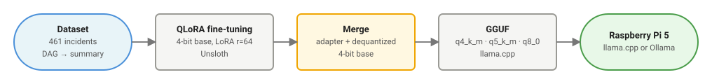

Summarizing Security Alerts on a Raspberry Pi, Part 2: Fine-Tuning and Evaluation
Part 2 of 2. This post covers fine-tuning and evaluation. Part 1 covers inference on the Raspberry Pi.
1. Introduction
Slips [1], our behavioral IDS, groups its detections into incidents. We want a small language model, running next to Slips on a Raspberry Pi 5, to explain each incident in a few clear lines without sending data to a cloud service. Part 1 describes the inference side: how an incident is turned into a compact text block (the DAG) that the model reads, and how the models run on the Pi.
This post covers how we built the models. We fine-tuned three small open models, Qwen2.5-1.5B, Qwen3.5-0.8B and Qwen3-0.6B, with the same data and settings, exported them for the Pi, and measured their quality with an LLM judge. The short version:
- Fine-tuning works: it teaches the models to rewrite the alerts in plain language instead of copying them.
- How the trained adapter is merged into the model matters, and it does not matter in the same way for every model.
- At full precision Qwen2.5-1.5B is the best of the three, level with GPT-4o. Quantized for the Pi it loses most of that advantage, while Qwen3.5-0.8B loses nothing, which is why we run Qwen3.5-0.8B on the Pi.
2. Dataset and Training
The dataset has 513 DAG-preprocessed incidents from real Slips sessions, each paired with a reference summary, split 90/10 into 461 training and 52 evaluation incidents. It is publicly available as stratosphere/immune-summary-sft-dataset [2] on Hugging Face.
Rather than writing the reference summaries by hand, three models (GPT-4o, GPT-4o-mini and Qwen2.5-3B) each wrote a candidate summary for every incident. An LLM judge scored all three, and the best one was kept. This best-of-N strategy means the training signal comes from the best output available, not from an average, which raises the quality ceiling compared to using a single annotator.
The pipeline is the same for the three models; only the base model changes:

Training. We use QLoRA with Unsloth [3]: the base model is loaded in 4-bit and a LoRA adapter is trained on top (r=64, alpha 64, RSLoRA, learning rate 2e-5 with cosine schedule, 3 epochs, effective batch 16, loss on the answer only, maximum length 4,096 tokens). All three models use the same ChatML prompt format. For Qwen3.5-0.8B the adapter also covers the linear-attention projections, so all 24 layers are adapted. On an NVIDIA A40, training takes 7 minutes for Qwen3-0.6B and 13 minutes for Qwen3.5-0.8B.
2.1 From Training Weights to a Pi-Deployable Model
Merging the adapter. To export a GGUF file, the adapter has to be merged into the base weights. The usual approach (the standard merge) adds it to the original 16-bit weights, but the adapter was trained against the 4-bit version of the model. The alternative (the dequantized or dq merge) adds it to the 4-bit weights converted back to 16-bit, which are exactly the weights seen during training. We evaluated both merges at full precision (bf16):
| Model | Standard merge | Dequantized merge |
|---|---|---|
| Qwen2.5-1.5B | 16.13 | 21.94 |
| Qwen3.5-0.8B | 18.19 | 17.51 |
| Qwen3-0.6B | 18.70 | 15.32 |
Summary score out of 40 (section 3), 47 incidents.
The choice matters, and not in the same direction for every model. For Qwen2.5-1.5B the dequantized merge is clearly better (+5.8 points; a second run reproduced the same answers and scores). For Qwen3.5-0.8B it makes no difference. For Qwen3-0.6B the dequantized merge leaves the severity breakdown unfilled in 35 of the 47 answers. The GGUF files evaluated in this post are built from the dequantized merge.
Export. The merged model is converted to GGUF with llama.cpp's tools and quantized at three levels:
- q4_k_m: the smallest; the default for the Pi.
- q5_k_m: a middle option.
- q8_0: nearly lossless, for devices with more memory.
A few details we had to get right:
- Qwen3.5 ships a multi-token-prediction head that Ollama (0.19) cannot load; it is only used for speculative decoding, so we export without it.
- Ollama's OpenAI-compatible endpoint ignores
max_completion_tokens, so an unlucky request can generate tens of thousands of tokens. The output limit is set in the Modelfile instead (num_predict). - The training chat template inserts Qwen's default system prompt when a
request has none; the Modelfile must set it too (
SYSTEM), together with the context length.
The weights, GGUF files and LoRA adapters are on Hugging Face (see Links); Qwen2.5-1.5B is also available on Ollama as stratosphere/qwen2.5-1.5b-slips-immune-summarization [4].
3. Evaluation
We evaluated on the held-out incidents whose DAG fits the evaluation limit:
47 of the 52 (45 malware, 2 normal). An LLM judge (gpt-oss-120b) scores each
summary on its own, without knowing which model wrote it, on four criteria
from 1 to 10: evidence coverage, severity assessment, grouping and
conciseness, and translation and clarity (total out of 40).
Designing the rubric taught us something about the task. The DAG is already formatted like the expected output, and a judge that is not told this rewards summaries that copy it. It also tends to treat the severity labels in the DAG as the correct answer, although Slips assigns them automatically and the task asks the model to reassess them. Our rubric tells the judge both things, shows it how much of the summary is copied from the DAG, and gives copying no credit.
The judge is noisy on single incidents (adding one line to its prompt moved some scores by up to 11 points), but the averages over 47 incidents are stable. We only treat differences above about 1 point (out of 40) as meaningful.
3.1 Overall Results
| Model | Untuned | Fine-tuned, 4-bit | Fine-tuned, 16-bit |
|---|---|---|---|
| GPT-4o-mini | 20.74 | — | — |
| GPT-4o | 19.53 | — | — |
| Qwen2.5-1.5B | 11.19 | 17.49 | 21.94 |
| Qwen3.5-0.8B | 15.96 | 17.38 | 17.51 |
| Qwen3-0.6B | 16.64 | 16.85 | 15.32 |
| Qwen2.5-3B | 13.19 | — | — |
Summary score out of 40. 4-bit: the merged model loaded in 4-bit (bitsandbytes), as in training. 16-bit: the dequantized merge in bf16.
Fine-tuning lifts Qwen2.5-1.5B from 11.2 to 21.9 at full precision, level with GPT-4o, and both Qwen2.5-1.5B and Qwen3.5-0.8B end up well above the untuned Qwen2.5-3B. The quantization results below show how much of that survives on the Pi.
3.2 Copying vs Rewriting
The untuned Qwen3.5-0.8B and Qwen3-0.6B already score fairly well, because they reproduce the DAG's format. Measuring how much of each summary is found word for word in the DAG shows what they actually do:
| Model | Summary text copied from the DAG |
|---|---|
| GPT-4o / GPT-4o-mini | 1.2% / 2.3% |
| Qwen2.5-1.5B / Qwen2.5-3B (untuned) | 9.8% / 8.8% |
| Fine-tuned models (all three) | 8–10% |
| Qwen3-0.6B (untuned) | 49.3% |
| Qwen3.5-0.8B (untuned) | 64.3% |
Share of the summary's event text (word 5-grams) found verbatim in the DAG.
Fine-tuning teaches the models to rewrite rather than copy: the translation and clarity score of Qwen3.5-0.8B goes from 3.8 to 6.4 out of 10 (Qwen2.5-1.5B from 3.8 to 6.1). This is arguably the most relevant result for the operator who reads the summaries.
3.3 Impact of Quantization
| Model | 16-bit (bf16) | q8_0 | q5_k_m | q4_k_m |
|---|---|---|---|---|
| Qwen2.5-1.5B | 21.94 | 19.02 | 17.45 | 15.77 |
| Qwen3.5-0.8B | 17.51 | 17.91 | 16.79 | 17.81 |
| Qwen3-0.6B | 15.32 | 16.11 | 14.68 | 13.83 |
Summary score out of 40. All four columns come from the same merged weights (dequantized merge): bf16 served with Hugging Face Transformers, the GGUF files running in Ollama. Differences below ~1 point are within the judge's noise.
- Qwen3.5-0.8B loses nothing. It scores 17.5 at full precision and 16.8–17.9 at every quantization level, all within noise: its q4_k_m, the file we would deploy on the Pi, is as good as the full model.
- Qwen2.5-1.5B loses most of its advantage. At full precision it is the best small model (21.9, level with GPT-4o), but it drops to 19.0 at q8_0 and 15.8 at q4_k_m. On the Pi it ends up where Qwen3.5-0.8B is, at twice the size.
- Qwen3-0.6B is not reliable for summaries. It often leaves part of the
output template unfilled, typically the severity breakdown line
(
Severity breakdown: [Your calculated breakdown, ...]): in 35 of the 47 answers at full precision and in 7 to 39 in the GGUF files. We penalize this explicitly, which is why its scores fall below its untuned score.
3.4 Results by Incident Complexity
| Complexity | Incidents | GPT-4o-mini | GPT-4o | Qwen2.5-1.5B | Qwen3.5-0.8B | Qwen3-0.6B |
|---|---|---|---|---|---|---|
| Simple (< 500 events) | 31 | 21.10 | 19.58 | 18.57 | 18.76 | 16.70 |
| Medium (500–1,999) | 7 | 19.57 | 19.00 | 15.14 | 15.90 | 12.57 |
| Complex (≥ 2,000) | 9 | 20.44 | 19.78 | 15.19 | 14.41 | 10.37 |
Fine-tuned models: mean over their q4_k_m, q5_k_m and q8_0 GGUF files.
On simple incidents, which are two thirds of the evaluation set, the fine-tuned Qwen3.5-0.8B is within about 1 point of GPT-4o. All small models drop on medium and complex incidents, where the DAG is longest. This is mostly an input problem rather than a model problem: incidents this long were mostly dropped from training, and the longest come close to, or exceed, the context limit (section 4).
4. Limitations and Next Steps
- Long incidents. Training records whose answer starts after 4,096 tokens contribute nothing to training; this removes 160 of the 461 training records, the longest and most complex incidents. As a result, the models never saw the truncation marker used at inference (Part 1): the few records that carry it are all longer than that. On the evaluation side, 4 of the 47 prompts are longer than the 8,192-token context.
- Small, imbalanced evaluation set. 47 incidents, 45 of them malware; performance on benign traffic is not well characterized, and differences below ~1 point are within the judge's noise. The merge and full-precision comparisons also use these 47 incidents only.
- Prompt format. The models were trained with the instructions in the system message and evaluated with a longer prompt that carries the instructions in the user message. We have not yet measured whether the training format scores differently.
- English only.
The gap to the cloud models is real, and it is largest on the long incidents. The next steps on the training side are to train on the long incidents instead of dropping them, and to find a way to keep more of Qwen2.5-1.5B's full-precision quality after quantization.
This post is part of the ongoing research at the Stratosphere IPS Lab [5], Czech Technical University in Prague.
References
[1] Slips, the behavioral network IDS developed at the Stratosphere IPS Lab.
[2] The summarization dataset on Hugging Face.
[3] Unsloth, used for the QLoRA fine-tuning.
[4] The Qwen2.5-1.5B summary model on Ollama.
[5] The Stratosphere IPS Lab, Czech Technical University in Prague.
[6] The Qwen3.5-0.8B summary model on Hugging Face: weights, GGUF files and LoRA adapter.
[7] The Qwen2.5-1.5B summary model on Hugging Face.
[8] slips-tools: the scripts for dataset generation, training, evaluation and the Raspberry Pi benchmark.
[9] llama.cpp, CPU inference for models in its GGUF format.